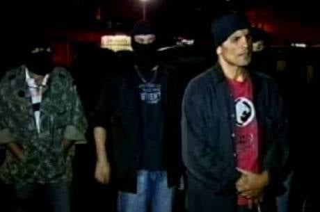

A realização de operações "Impacto" terminou na prisão de traficantes.
Já no bairro Dom Bosco, o vendedor de entorpecentes preso foi Henrique de Souza Pereira, de 28 anos. O criminoso também foi abordado em casa, na rua Ipatinga do Oeste, onde escondia um revólver calibre 32, 1 kg de maconha e R$ 300. A droga foi achada em vaso de planta deixado no terreiro da residência de Pereira. Outros 11 mandados de busca e apreensão foram cumpridos nessa região de BH, mas nenhum outro suspeito foi conduzido. As ações foram feitas nos bairros Alto Vera Cruz, na região leste da capital mineira, e no Dom Bosco, região noroeste.
veja maisUm homem suspeito de tentar matar a mulher foi preso na madrugada desta quinta-feira. O crime ocorreu no Bairro Dom Bosco, na Região Noroeste de Belo Horizonte. Ele afirmou à polícia que o casal discutiu, ficou nervoso, atirou contra a mulher e em seguida foi para o bar. O marido foi preso em flagrante e encaminhado para a Delegacia Especializada de Crimes Contra a Mulher. A arma de fogo utilizada no crime, uma garrucha calibre 22, foi apreendida.
FeminicidioGrupo comete onda de assaltos no Dom Bosco e é preso comemorando crimes
Uma quadrilha que teria praticado uma série de assaltos na avenida Ivaí, no bairro Dom Bosco, na região Noroeste de Belo Horizonte, nesta segunda-feira (10) foi presa pela Polícia Militar nesta tarde. O grupo foi preso enquanto comemorava os crimes em um bar no bairro Bom Sucesso, na região do Barreiro.
AcompanheVolte para a pagina inicial